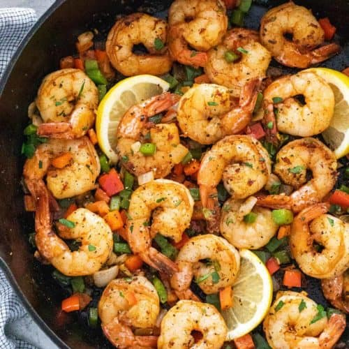

Cajun Shrimp

Description
A juicy thick-cut ribeye steak seared with fresh thyme and basted with butter.
Ingredients:
- 1 pound raw peeled shrimp
- Mixed fresh peppers
- 2 table spoons of unsalted butter
- 3 fresh garlic cloves
- Salt & pepper
- Cajun seasoning
- One lemon
Steps:
- Peel and dice the fresh garlic.
- Wash and slice the mixed peppers.
- Generously season the shrimp with salt, pepper and cajun seasoning.
- Heat and spread a drizzle of olive oil in a seasoned cast iron skillet on medium heat.
- When steaming, place the shrimp and garlic in the pan and cook for two to three minutes.
- To sear, avoid stirring shrimp and instead flip with a spatula. Otherwise stir occasionally.
- Add mixed pepeprs and season with salt pepper and squeezed lemon.
- Remove shrimp after cooked through and let rest.
- Serve with rasta pasta and corn on the cob.